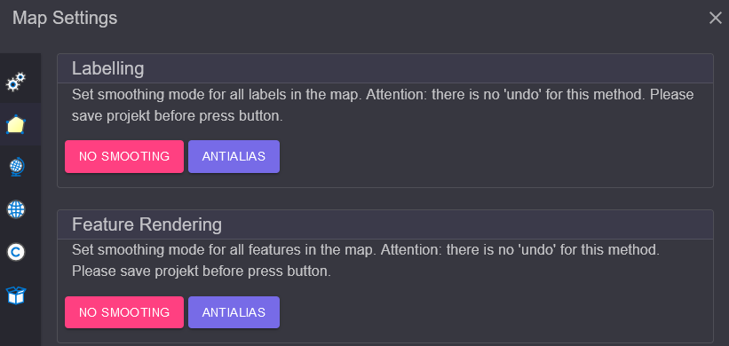
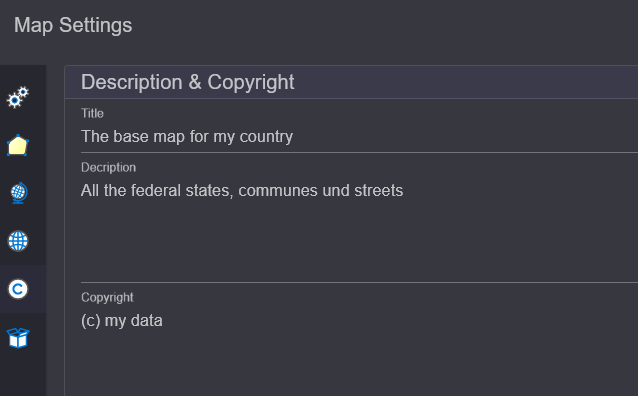

Neue Karte anlegen¶
Zu Beginn kann optional eine neue Karte angelegt werden. Das erfolgt über den Button
New Map oder den Schnelleinstiegsbutton im TOC-Bereich:
Im Dialog kann ein Name für die neue Karte vergeben werden. Mit Confirm wird die
neue Karte erstellt. Der neue Name erscheint jetzt anstelle von map1 im TOC-Bereich.
Karten-Einstellungen¶
Weitere Einstellungen können über den Button Map Settings getroffen werden.
Hier kann auch später noch der eben gewählte Name der Karte geändert werden:
Im Bereich Display kann ein Referenzmaßstab gesetzt werden. Ist dieser Wert größer als
0, beziehen sich Symbol- und Schriftgrößen auf diesen Maßstab. Je nach Kartenmaßstab
werden die Symbole und die Beschriftung größer oder kleiner.
Als Map/Display Units sollte für die meisten Anwendungsfälle Meter eingestellt werden.
Ohne Map Units kann der Referenzmaßstab nicht berücksichtigt werden.
Im Bereich Current werden die Koordinaten des aktuellen Kartenausschnitts angezeigt, bezogen
auf das aktuell eingestellte Koordinatensystem. Ebenfalls die Größe des Kartenbildes.
Diese Information ist oft hilfreich, wenn man Dienste im gView.Server testen möchte.
Links im Dialog werden noch weitere Einstellungsseiten angeboten:
Darstellung (Appearance)¶
Diese Seite kann verwendet werden, um den Glättungsmodus (Smoothing Mode) der Symbolik und Beschriftung zu bestimmen. Klickt man auf einen dieser Buttons, wird der entsprechende Modus auf alle in die Karte aktuell eingefügten Layer angewendet:
Spatial Reference (System)¶
Hier kann das räumliche Bezugssystem für die Karte vergeben werden. Es sollte das
Koordinatensystem eingestellt werden, in dem die Daten zum großen Teil vorliegen. Zum Ändern
des Koordinatensystems klickt man auf Select. Im Dialog gibt man im Suchfeld den Namen
oder den EPSG-Code des gewünschten Koordinatensystems ein und klickt dann in der Liste auf das
gewünschte Item. Damit wird das Koordinatensystem übernommen:
Bemerkung
Das Koordinatensystem, in dem die Daten in gView.Carto angezeigt werden, entspricht immer dem des transparenten Hintergrund-TileCaches. Eine Änderung hier wird also nicht sofort in der Darstellung erkennbar.
Allerdings ändern sich die angezeigten Koordinaten in der Statusleiste. Diese Einstellung ist ebenfalls relevant, wenn die Karte später im gView.Server publiziert wird. Alle Koordinaten und BoundingBox-Werte in den Diensteigenschaften beziehen sich auf das hier eingestellte Koordinatensystem.
Ein weiterer Punkt in diesem Dialog ist Spatial Behavior.
Damit kann eingestellt werden, wie sich der Dienst später verhalten sollte, wenn er im
WebMercator-System abgerufen wird. In der Regel wird der Maßstab ohne Berücksichtigung der
Verzerrung berechnet. Egal wo man sich auf der Karte befindet, der berechnete Maßstab entspricht
dem Maßstab am Äquator. Da die Nord/Süd-Verzerrung beim WebMercator sehr groß sein kann,
ist das nicht immer wünschenswert. Stellt man hier anstelle von default den Wert
Include Latitude When Calculating Map Scale ein, wird die geographische Breite beim Berechnen
des internen Maßstabs berücksichtigt (Faktor cos(lat)).
Default Layer Spatial Reference (SRef)¶
Fügt man später Daten der Karte hinzu, kann es vorkommen, dass manche Layer keine Information
besitzen, in welchem Koordinatensystem die Daten liegen. Das sollte nicht die Regel sein, aber
falls dieses Problem auftritt, kann hier ein Default Koordinatensystem eingestellt werden.
Für alle Layer ohne Koordinatenangabe wird dieses verwendet:

Bemerkung
Diese Einstellung hier sollte nur in Ausnahmefällen notwendig sein. In der Regel ist darauf zu achten, dass alle Layer Informationen zu ihrem Koordinatensystem besitzen.
Description & Copyright¶
Unter diesem Punkt kann ein sprechender Titel für die Karte sowie eine Beschreibung und Copyright-Hinweise angegeben werden. Diese erscheinen später als Metadaten in den gView.Server Diensten:
Resources¶
Hier können der Karte binäre Objekte übergeben werden. Diese werden später innerhalb des Kartendokuments gespeichert. Hier sollten und dürfen keine großen Dateien hinterlegt werden, weil sonst das Kartendokument sehr groß wird.
Ein Anwendungsfall sind kleine PNG-Grafiken, die später als Symbole verwendet werden sollten (RasterSymbol bei Punkten). Die Symbole können auch als Pfad zum Bild eingestellt werden. Das hat jedoch den Nachteil, dass der gleiche Pfad später auch auf dem Server vorhanden sein muss, auf dem gView.Server ausgeführt wird. Gibt man das Bild hier an, kann später beim RasterMarkerSymbol darauf verwiesen werden. Ist das Symbol im Kartendokument gespeichert, sind keine identischen Pfade notwendig.
Bemerkung
Eine weitere Möglichkeit, Symbole darzustellen, sind True Type Fonts (empfohlene Methode). Diese können hier nicht hochgeladen und verwendet werden. Die Fonts müssen auch auf dem gView.Server Server installiert sein.